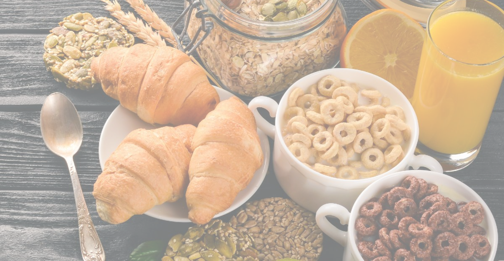
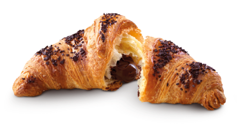
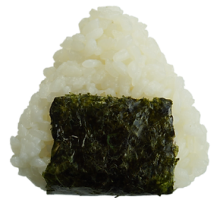

"COLAZIONI NEL MONDO"

ITALIA

Iniziamo proprio dal nostro Bel Paese. La più classica delle colazioni consiste in una bevanda calda - caffè, tè, oppure cappuccino - accompagnata da una brioche oppure dei biscotti. Esistono in realtà molte varianti: c'è chi preferisce, soprattutto i più piccoli, una tazza di latte tiepido, dove magari tuffare dei cereali, oppure chi mangia un tramezzino al posto del cornetto. Questione di gusti!
La colazione tipica israeliana trae le sue origini dalla colazione che veniva fatta nelle kibbutz, ovvere le comunità agricole in cui viveno diverse famiglie. Era ed è tutt'ora una colazione molto abbondante che prevede l'impiego di prodotti freschi, tra cui uova preparate in vari modi (alla coque, strapazzate, frittate), insalata di pomodori e cetrioli, hummus di ceci, labneh, (una sorta di formaggio fresco simile allo yogurt greco), pane fresco come pita o challah, accompagnato con formaggi, marmellate, miele, olive e sottaceti.
Nel piatto completo che costituisce la classica colazione inglese non devono mancare fagioli, salsiccia, bacon (pancetta fritta), uova, funghi, hash browns (frittelle di patate) e pane tostato. Il tutto è accompagnato da una fumante tazza di tè, con l'aggiunta opzionale di black pudding, una specie di salsiccia fatta con sangue di maiale.
GIAPPONE

Una scelta molto in voga per la colazione in Giappone è il tofu, magari accompagnato da riso e pesce. Come spesso accade, essi vengono intinti nella salsa di soia e, come il resto del regime alimentare dei giapponesi, anche questo pasto risulta molto salutare.
Si è soliti iniziare la giornata con diversi tipi di chutney (salse di accompagnamento realizzate con diversi ingredienti), marmellata, formaggio e burro. Il pane tipico marocchino è tondo e piatto, simile alle pagnotte arabe diffuse anche in Italia, viene servito per la colazione con dei pancake a base di semolino chiamati Baghir.

contatti come trovarci diventa parte del teem domande frquenti